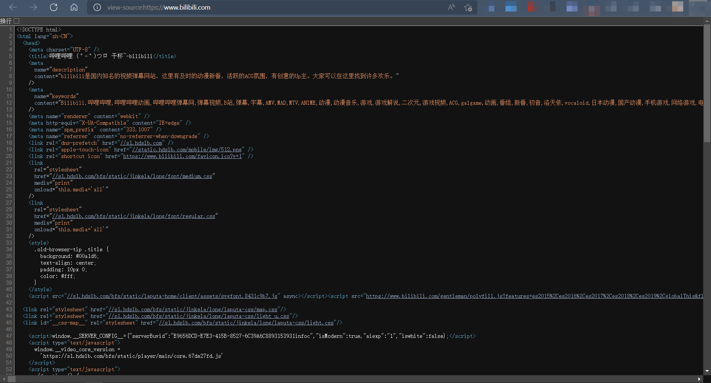

# 网站的解构
既然我们要制作网站，那肯定要先知道网站是由哪些部分构成的。
首先，b站是个网站，通过每天在b站各个分区闲逛，我们可以有个很基本的认识：网站是由一个或多个网页组成的。
那么，网页是通过什么制作的？ 毫无疑问——代码。浏览器应用、电脑桌面应用、手机APP、微信小程序等等都是由代码制作出来的，不同的是使用的代码规则不一样，小程序有wx规则、APP有安卓/IOS规则、桌面应用有java/...规则 （如果你无法理解这些例子也没有关系，可以跳过）。
继续提问：制作网页是遵循什么代码规则？ 我们对"代码"这个词有了表面认识，那么接下来开始具象认识，见见它的真面目。通过浏览器随便打开一个网站 （以Edge浏览器打开b站为例） ，然后 右键 -> 查看页面源代码，或者通过快捷键 Ctrl + u，就可以看到这个网站的源代码：
可以肯定的是，这些就是代码。但在没有任何编程/代码基础的情况下，我们看到的是一堆字符的堆砌，并没有一眼能看懂的东西。所以，我们得仔细地看图找规律。
- 第一，在第 5 行可以看到b站的标题
<title>哔哩哔哩 (゜-゜)つロ 干杯~-bilibili</title>； - 第二，在第 6-9 行可以看到b站的网站描述（下图为代码效果）
<meta name="description" content="bilibili是国内知名的视频弹幕网站，这里有及时的动漫新番，活跃的ACG氛围，有创意的Up主。大家可以在这里找到许多欢乐。" />；
- 第三，从源代码图中发现，有很多
<title> ... </title>、<style> ... </style>、<script ... > ... </script>、<html ... > ... </html>、<meta ... >、<link ... >类似这样的东西，它们像咒语一样，而...省略的部分像是写着咒语的内容。
结合上面三点比较明显的规律，我就可以明确的告诉你，这些咒语就是制作网页的代码规则，我们将 <title></title> / <meta> / …… 称为标签。制作网页的代码规则就是这些标签，制作网页的代码语言就是这一系列标签的总和——标记语言，称为 HTML（HyperText Markup Language, 超文本标记语言）。
在这里给出另一个解释：
网页是图片、链接、文字、音频、视频等元素组成，其实就是一个
.html文件。
网页生成制作：由前端人员书写HTML文件，然后浏览器打开，就能看到网页。
HTML：超文本标记语言，用来制作网页的一门语言，有标签组成，比如图片标签、连接标签、视频标签等。
知道了"HTML/html"这个词，但没见过它？其实，一个网页就是一个文件，我们打开的b站源代码就是一个html文件，不信？在浏览器执行保存源代码操作 Ctrl + S ，你会发现，文件后缀是 .html，文件类型是 网页 HTML。
看到这里，可以做个初步总结：
- 网站由一个或多个网页组成。
- （从浏览器用户角度） 网页包含图片、链接、文字、音频、视频等元素，这些元素汇聚在同一个页面中，通过排列布局和修饰后，共同呈现出用户所看见的效果。
- （从开发者角度） 一个网页/页面其实就是一个
.html文件，这些.html文件是 通过HTML（HyperText Markup Language, 超文本标记语言）规则里的一系列标签（如 标题标签<title></title>、图片标签<img>、链接标签<link>、视频标签<video></video>）编写而成的代码。 - （浏览器和 html 的关系）
.html文件运行在浏览器上，由浏览器来解析。
# 标签
| 语义 | 标签 | 显示效果 |
|---|---|---|
| ▣ 标题标签 | ||
| 一级标题 | <h1></h1> | 一级标题 |
| 二级标题 | <h2></h2> | 二级标题 |
| 三级标题 | <h3></h3> | 三级标题 |
| 四级标题 | <h4></h4> | 四级标题 |
| 五级标题 | <h5></h5> | 五级标题 |
| 六级标题 | <h6></h6> | 六级标题 |
| ▣ 文本格式化标签 | ||
| 加粗 | <strong></strong> 或者 <b></b> | 加粗 |
| 斜体 | <em></em> 或者 <i></i> | 斜体 |
| 删除 | <del></del> 或者 <s></s> | |
| 下划线 | <ins></ins> 或者 <u></u> | 下划线 |
| ▣ 无语义标签 | ||
| 容器 | <div></div> | 容器 |
| 行内容器 | <span></span> | 行内容器 |
| ▣ 资源标签 | ||
| 图像 | <img src="" alt="" title=""> |  |
| 链接跳转 | <a href="" title="" target=""></a> | 链接跳转 |